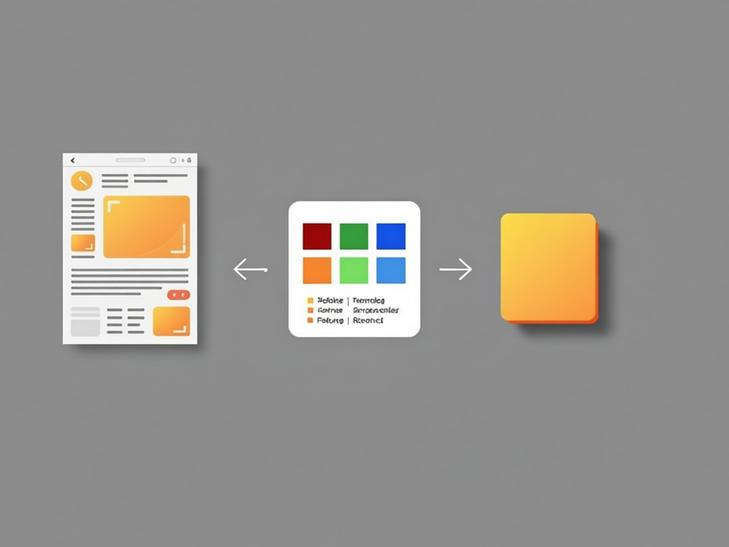

Turning Accessibility Issues into Better Tokens

Design Systems
Documentation
Product Design
The Problem
After applying a new set of design tokens, some colors required only minimal changes to meet the new system. While these changes looked small, they created uncertainty during QA.
It wasn't always clear whether a slightly different color was an intentional token update or an actual contrast issue. QA teams had to manually compare the new and old values and figure out which alternative should be used.
I built this tool to make that process faster and clearer — allowing QA to quickly identify a contrast issue and find the appropriate color alternative from the design system.
The Idea
Accessibility issues are often discovered late in the design process. A contrast problem might be easy to identify, but finding the right replacement color while keeping the design system consistent can take much more effort.
I created an AI-powered tool to connect these two problems.
How it works
The tool analyzes a UI screenshot and identifies elements where color contrast fails accessibility requirements.
It then compares the problematic colors against the existing design tokens and their relationships within the design system.
From this analysis, the tool proposes a new token that provides a better contrast while remaining consistent with the existing visual language.
Screenshot → Contrast analysis → Token comparison → New token

Designing the experience
The goal was to move beyond simply reporting accessibility errors.
Instead of telling designers “this color fails”, the tool helps answer the more useful question:
“What should this color be instead?”
The experience connects the accessibility result directly to the design system, making the solution actionable rather than leaving designers to manually search through colors and tokens.
The impact
The tool makes accessibility improvements faster and more systematic.
It helps designers identify problems directly from the interface, understand how those problems relate to the design system, and create better tokens that can be reused across the product.
AI doesn't replace the designer's knowledge — it helps turn that knowledge into something useful.